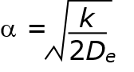

Model approximation¶
Note that these potential functions only approximately represent the molecular structures.
For example, bond vibrations are commonly represented as a simple harmonic with a force constant and bond equilibrium length that represent the characteristics of the bond. Such a representation is not realistic because it renders the bond becomes unbreakable, as shown in the diagram below.

Note that the harmonic function only fits close to the equilibrium distance, usually close to the room temperature.
Alternatively, Morse function, which provides a better fit to the reality, can be used. It is a better approximation for the vibrational structure of the molecule that accounts for the anharmonicity of a real bond.
The Morse function would need to fit to three parameters:
D e, the well depth, which measures the bond strength
\({\alpha}\), which associates with the width of the potential
b 0, the equilibrium bond length.
The quantity \({\alpha}\) is related to the force constant, k, at the minimum well depth as:
{kind=link}